용접기능사 (2015-04-04 기출문제)
1과목: 용접일반
1. 용접작업 시 안전에 관한 사항으로 틀린 것은?
- 높은 곳에서 용접작업 할 경우 추락, 낙하 등의 위험이 있으므로 항상 안전벨트와 안전모를 착용한다.
- 용접작업 중에 여러 가지 유해 가스가 발생하기 때문에 통풍 또는 환기 장치가 필요하다.
- 가연성의 분진, 화약류 등 위험물이 있는 곳에서는 용접을 해서는 안 된다.
- 가스 용접은 강한 빛이 나오지 않기 때문에 보안경을 착용하지 않아도 괜찮다.
(정답률: 95%)

2. 다음 전기 저항 용접법 중 주로 기밀, 수밀, 유밀성을 필요로 하는 탱크의 용접 등에 가장 적합한 것은?
- 점(spot)용접법
- 심(seam)용접법
- 프로젝션(projection)용접법
- 플래시(flash)용접법
(정답률: 61%)
3. 용접부의 중앙으로부터 양끝을 향해 용접해 나가는 방법으로, 이음의 수축에 의한 변형이 서로 대칭이 되게 할 경우에 사용되는 용착법을 무엇이라 하는가?
- 전진법
- 비석법
- 케스케이드법
- 대칭법
(정답률: 88%)
4. 불활성 가스를 이용한 용가재인 전극 와이어를 송급장치에 의해 연속적으로 보내어 아크를 발생시키는 소모식 또는 용극식 용접 방식을 무엇이라 하는가?
- TIG 용접
- MIG 용접
- 피복아크 용접
- 서브머지드 아크 용접
(정답률: 66%)
5. 용접부에 결함 발생 시 보수하는 방법 중 틀린 것은?
- 기공이나 슬래그 섞임 등이 있는 경우는 깎아내고 재용접한다.
- 균열이 발견되었을 경우 균열 위에 덧살올림 용접을 한다.
- 언더컷일 경우 가는 용접봉을 사용하여 보수한다.
- 오버랩일 경우 일부분을 깎아내고 재용접 한다.
(정답률: 72%)
6. 용접할 때 용접 전 적당한 온도로 예열을 하면 냉각 속도를 느리게 하여 결함을 방지할 수 있다. 예열 온도 설명 중 옳은 것은?
- 고장력강의 경우는 용접 홈을 50~350℃로 예열
- 저합금강의 경우는 용점 홈을 200~500℃로 예열
- 연강을 0℃이하에서 용접할 경우는 이음의 양쪽 폭 100㎜ 정도를 40~250℃로 예열
- 주철의 경우는 용접홈을 40~75℃로 예열
(정답률: 42%)
7. 서브머지드 아크 용접에 관한 설명으로 틀린 것은?
- 장비의 가격이 고가이다.
- 홈 가공의 정밀을 요하지 않는다.
- 불가시 용접이다.
- 주로 아래보기 자세로 용접한다.
(정답률: 71%)
8. 안전표지 색채 중 방사능 표지의 색상은 어느 색인가?
- 빨강
- 노랑
- 자주
- 녹색
(정답률: 75%)
9. 용접부의 시험에서 비파괴 검사로만 짝지어진 것은?
- 인장 시험 - 외관 시험
- 피로 시험 - 누설 시험
- 형광 시험 - 충격 시험
- 초음파 시험 - 방사선 투과시험
(정답률: 89%)
10. 용접 시공 시 발생하는 용접변형이나 잔류응력 발생을 최소화하기 위하여 용접순서를 정할 때 유의사항으로 틀린 것은?
- 동일평면 내에 많은 이음이 있을 때 수축은 가능한 자유단으로 보낸다.
- 중심선에 대하여 대칭으로 용접한다.
- 수축이 적은 이음은 가능한 먼저 용접하고, 수축이 큰 이음은 나중에 한다.
- 리벳작업과 용접을 같이 할 때에는 용접을 먼저 한다.
(정답률: 76%)
11. 다음 중 용접부 검사방법에 있어 비파괴 시험에 해당하는 것은?
- 피로 시험
- 화학분석 시험
- 용접균열 시험
- 침투 탐상 시험
(정답률: 71%)
12. 다음 중 불활성가스(inert gas)가 아닌 것은?
- Ar
- He
- Ne
- CO2
(정답률: 59%)
13. 납땜에서 경납용 용제에 해당하는 것은?
- 염화아연
- 인산
- 염산
- 붕산
(정답률: 65%)
14. 논 가스 아크 용접의 장점으로 틀린 것은?
- 보호 가스나 용제를 필요로 하지 않는다.
- 피복아크용접봉의 저수소계와 같이 수소의 발생이 적다.
- 용접비드가 좋지만 슬래그 박리성은 나쁘다.
- 용접장치가 간단하며 운반이 편리하다.
(정답률: 61%)
15. 용접선과 하중의 방향이 평행하게 작용하는 필릿 용접은?
- 전면
- 측면
- 경사
- 변두리
(정답률: 55%)
16. 납땜 시 용제가 갖추어야 할 조건이 아닌 것은?
- 모재의 불순물 등을 제거하고 유동성이 좋을 것
- 청정한 금속면의 산화를 쉽게 할 것
- 땜납의 표면장력에 맞추어 모재와의 친화도를 높일 것
- 납땜 후 슬래그 제거가 용이할 것
(정답률: 71%)
17. 피복아크용접 시 전격을 방지하는 방법으로 틀린 것은?
- 전격방지기를 부착한다.
- 용접홀더에 맨손으로 용접봉을 갈아 끼운다.
- 용접기 내부에 함부로 손을 대지 않는다.
- 절연성이 좋은 장갑을 사용한다.
(정답률: 90%)
18. 맞대기이음에서 판 두께 100㎜, 용접 길이 300㎝, 인장하중이 9000kgf일 때 인장응력은 몇 kgf/cm2인가?
- 0.3
- 3
- 30
- 300
(정답률: 55%)
19. 다음은 용접 이음부의 홈의 종류이다. 박판 용접에 가장 적합한 것은?
- K형
- H형
- I형
- V형
(정답률: 64%)
20. 주철의 보수용접방법에 해당되지 않는 것은?
- 스터드링
- 비녀장법
- 버터링법
- 백킹법
(정답률: 50%)
21. MIG 용접이나 탄산가스 아크 용접과 같이 전류 밀도가 높은 자동이나 반자동 용접기가 갖는 특성은?
- 수하 특성과 정전압 특성
- 정전압 특성과 상승 특성
- 수하 특성과 상승 특성
- 맥동 전류 특성
(정답률: 49%)
22. CO2 가스 아크 용접에서 아크전압에 대한 설명으로 옳은 것은?
- 아크전압이 높으면 비드 폭이 넓어진다.
- 아크전압이 높으면 비드가 볼록해진다.
- 아크전압이 높으면 용입이 깊어진다.
- 아크전압이 높으면 아크길이가 짧다.
(정답률: 50%)
23. 다음 중 가스 용접에서 산화불꽃으로 용접할 경우 가장 적합한 용접 재료는?
- 황동
- 모넬메탈
- 알루미늄
- 스테인리스
(정답률: 49%)
24. 용접기의 사용률이 40%인 경우 아크 시간과 휴식시간을 합한 전체시간은 10분을 기준으로 했을 때 발생시간은 몇 분인가?
- 4
- 6
- 8
- 10
(정답률: 72%)
25. 얇은 철판을 쌓아 포개어 놓고 한꺼번에 절단하는 방법으로 가장 적합한 것은?
- 분말절단
- 산소창절단
- 포갬절단
- 금속아크절단
(정답률: 82%)
26. 용접봉의 용융속도는 무엇으로 표시하는가?
- 단위 시간당 소비되는 용접봉의 길이
- 단위 시간당 형성되는 비드의 길이
- 단위 시간당 용접 입열의 양
- 단위 시간당 소모되는 용접전류
(정답률: 79%)
27. 전류조정을 전기적으로 하기 때문에 원격조정이 가능한 교류 용접기는?
- 가포화 리액터형
- 가동 코일형
- 가동 철심형
- 탭 전환형
(정답률: 71%)
28. 35℃에서 150kgf/㎠으로 압축하여 내부용적 40.7리터의 산소 용기에 충전하였을 때, 용기속의 산소량은 몇 리터인가?
- 4470
- 5291
- 61⑤
- 7000
(정답률: 75%)
29. 아크 전류가 일정할 때 아크 전압이 높아지면 용융 속도가 늦어지고, 아크 전압이 낮아지면 용융 속도는 빨라진다. 이와 같은 아크 특성은?
- 부저항 특성
- 절연회복 특성
- 전압회복 특성
- 아크길이 자기제어 특성
(정답률: 72%)
30. 다음 중 산소-아세틸렌 용접법에서 전진법과 비교한 후진법의 설명으로 틀린 것은?
- 용접 속도가 느리다.
- 열 이용률이 좋다.
- 용접변형이 작다.
- 홈 각도가 작다.
(정답률: 65%)
31. 다음 중 가스 절단에 있어 양호한 절단면을 얻기 위한 조건으로 옳은 것은?
- 드래그가 가능한 클 것
- 절단면 표면의 각이 예리할 것
- 슬래그 이탈이 이루어지지 않을 것
- 절단면이 평활하며 드래그의 홈이 깊을 것
(정답률: 54%)
32. 피복아크용접봉의 피복배합제 성분 중 가스발생제는?
- 산화티탄
- 규산나트륨
- 규산칼륨
- 탄산바륨
(정답률: 39%)
33. 가스절단에 대한 설명으로 옳은 것은?
- 강의 절단 원리는 예열 후 고압산소를 불어내면 강보다 용융점이 낮은 산화철이 생성되고 이때 산화철은 용융과 동시 절단된다.
- 양호한 절단면을 얻으려면 절단면이 평활하며 드래그의 홈이 높고 노치 등이 있을수록 좋다.
- 절단산소의 순도는 절단속도와 절단면에 영향이 없다.
- 가스절단 중에 모래를 뿌리면서 절단하는 방법을 가스분말절단이라 한다.
(정답률: 61%)
34. 가스용접에 사용되는 가스의 화학식을 잘못 나타낸 것은?
- 아세틸렌 : C2H2
- 프로판 : C3H8
- 에탄 : C4H7
- 부탄 : C4H10
(정답률: 55%)
35. 다음 중 아크 발생 초기에 모재가 냉각되어 있어 용접 입열이 부족한 관계로 아크가 불안정하기 때문에 아크 초기에만 용접 전류를 특별히 크게 하는 장치를 무엇이라 하는가?
- 원격제어장치
- 핫스타트장치
- 고주파발생장치
- 전격방지장치
(정답률: 84%)
2과목: 용접재료
36. 납땜 용제가 갖추어야 할 조건으로 틀린 것은?
- 모재의 산화 피막과 같은 불순물을 제거하고 유동성이 좋을 것
- 청정한 금속면의 산화를 방지할 것
- 납땜 후 슬래그의 제거가 용이할 것
- 침지 땜에 사용되는 것은 젖은 수분을 함유할 것
(정답률: 79%)
37. 직류 아크 용접 시 정극성으로 용접할 때의 특징이 아닌 것은?
- 박판, 주철, 합금강, 비철금속의 용접에 이용된다.
- 용접봉의 녹음이 느리다.
- 비드 폭이 좁다.
- 모재의 용입이 깊다.
(정답률: 56%)
38. 피복 아크 용접 결함 중 기공이 생기는 원인으로 틀린 것은?
- 용접 분위기 가운데 수소 또는 일산화탄소 과잉
- 용접부의 급속한 응고
- 슬래그의 유동성이 좋고 냉각하기 쉬울 때
- 과대 전류와 용접속도가 빠를 때
(정답률: 63%)
39. 금속재료의 경량화와 강인화를 위하여 섬유 강화금속 복합재료가 많이 연구되고 있다. 강화섬유 중에서 비금속계로 짝지어진 것은?
- K, W
- W, Ti
- W, Be
- SiC, Al2O3
(정답률: 56%)
40. 상자성체 금속에 해당되는 것은?
- Al
- Fe
- Ni
- Co
(정답률: 49%)
41. 구리(Cu)합금 중에서 가장 큰 강도와 경도를 나타내며 내식성, 도전성, 내피로성 등이 우수하여 베어링, 스프링 및 전극재료 등으로 사용되는 재료는?
- 인(P) 청동
- 규소(Si) 동
- 니켈(Ni) 청동
- 베릴륨(Be) 동
(정답률: 48%)
42. 고 Mn강으로 내마멸성과 내충격성이 우수하고, 특히 인성이 우수하기 때문에 파쇄 장치, 기차 레일, 굴착기 등의 재료로 사용되는 것은?
- 엘린바(elinvar)
- 디디뮴(didymium)
- 스텔라이트(stellite)
- 해드필드(hadfield)강
(정답률: 61%)
43. 시험편의 지름이 15㎜, 최대하중이 5200kgf일 때 인장강도는?
- 16.8kgf/mm2
- 29.4kgf/mm2
- 33.8kgf/mm2
- 55.8kgf/mm2
(정답률: 43%)
44. 다음의 금속 중 경금속에 해당하는 것은?
- Cu
- Be
- Ni
- Sn
(정답률: 45%)
45. 순철의 자기변태(A2)점 온도는 약 몇 ℃인가?
- 210℃
- 768℃
- 910℃
- 1400℃
(정답률: 59%)
46. 주철의 일반적인 성질을 설명한 것 중 틀린 것은?
- 용탕이 된 주철은 유동성이 좋다.
- 공정 주철의 탄소량은 4.3% 정도이다.
- 강보다 용융 온도가 높아 복잡한 형상이라도 주조하기 어렵다.
- 주철에 함유하는 전탄소(total carbon)는 흑연＋화합탄소로 나타낸다.
(정답률: 65%)
47. 포금(gun metal)에 대한 설명으로 틀린 것은?
- 내해수성이 우수하다.
- 성분은 8~12%Sn 청동에 1~2%Zn을 첨가한 합금이다.
- 용해주조 시 탈산제로 사용되는 P의 첨가량을 많이 하여 함금 중에 P를 0.⑤~0.5% 정도 남게 한 것이다.
- 수압, 수증기에 잘 견디므로 선박용 재료로 널리 사용된다.
(정답률: 51%)
48. 황동은 도가니로, 전기로 또는 반사로 중에서 용해하는데, Zn의 증발로 손실이 있기 때문에 이를 억제하기 위해서는 용탕 표면에 어떤 것을 덮어 주는가?
- 소금
- 석회석
- 숯가루
- Al 분말가루
(정답률: 56%)
49. 건축용 철골, 볼트, 리벳 등에 사용되는 것으로 연신율이 약 22%이고, 탄소함량이 약 0.15%인 강재는?
- 연강
- 경강
- 최경강
- 탄소공구강
(정답률: 51%)
50. 저용융점(fusible) 합금에 대한 설명으로 틀린 것은?
- Bi를 55% 이상 함유한 함금은 응고 수축을 한다.
- 용도로는 화재통보기, 압축공기용 탱크 안전밸브 등에 사용된다.
- 33~66%Pb를 함유한 Bi 합금은 응고 후 시효 진행에 따라 팽창현상을 나타낸다.
- 저용융점 합금은 약 250℃ 이하의 용융점을 갖는 것이며 Pb, Bi, Sn, In 등의 합금이다.
(정답률: 32%)
3과목: 기계제도
51. 치수 기입 방법이 틀린 것은?
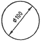
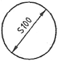
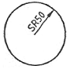
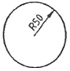
(정답률: 60%)
52. 다음과 같은 배관의 등각 투상도(isometric drawing)를 평면도로 나타낸 것으로 맞는 것은?
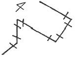
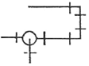
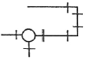
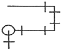
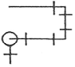
(정답률: 48%)
53. 표제란에 표시하는 내용이 아닌 것은?
- 재질
- 척도
- 각법
- 제품명
(정답률: 63%)
54. 그림과 같은 용접기호의 설명으로 옳은 것은?
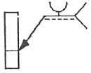
- U형 맞대기 용접, 화살표쪽 용접
- V형 맞대기 용접, 화살표쪽 용접
- U형 맞대기 용접, 화살표 반대쪽 용접
- V형 맞대기 용접, 화살표 반대쪽 용접
(정답률: 67%)
55. 전기아연도금 강판 및 강대의 KS기호 중 일반용 기호는?
- SECD
- SECE
- SEFC
- SECC
(정답률: 49%)
56. 보기 도면은 정면도와 우측면도만이 올바르게 도시되어 있다. 평면도로 가장 적합한 것은?
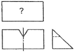
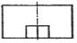
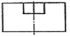
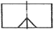
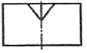
(정답률: 68%)
57. 선의 종류와 용도에 대한 설명의 연결이 틀린 것은?
- 가는 실선 : 짧은 중심을 나타내는 선
- 가는 파선 : 보이지 않는 물체의 모양을 나타내는 선
- 가는 1점 쇄선 : 기어의 피치원을 나타내는 선
- 가는 2점 쇄선 : 중심이 이동한 중심궤적을 표시하는 선
(정답률: 41%)
58. 그림의 입체도를 제3각법으로 올바르게 투상한 투상도는?
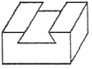
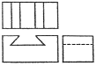
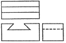
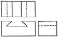
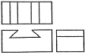
(정답률: 78%)
59. KS에서 규정하는 체결부품의 조립 간략 표시방법에서 구멍에 끼워 맞추기 위한 구멍, 볼트, 리벳의 기호 표시 중 공장에서 드릴 가공 및 끼워 맞춤을 하는 것은?
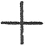
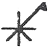
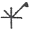
(정답률: 47%)
60. 그림과 같은 단면도에서 “A"가 나타내는 것은?
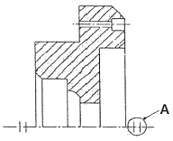
- 바닥 표시 기호
- 대칭 도시 기호
- 반복 도형 생략 기호
- 한쪽 단면도 표시 기호
(정답률: 63%)